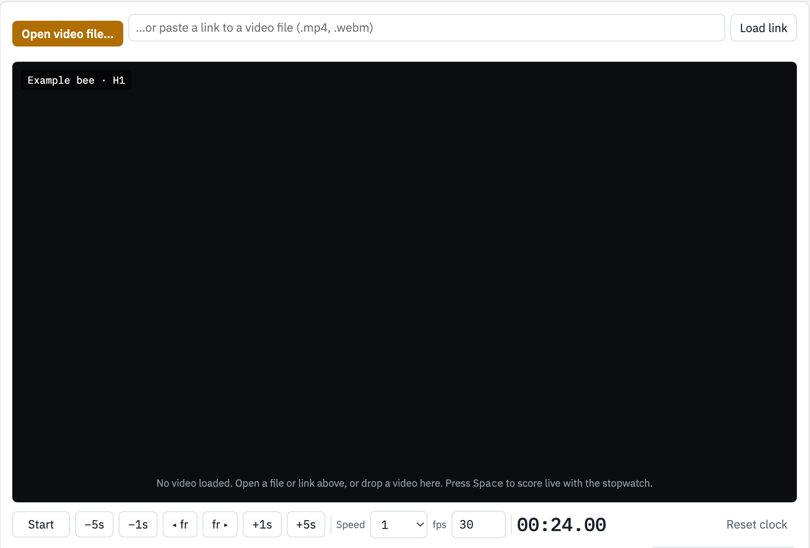
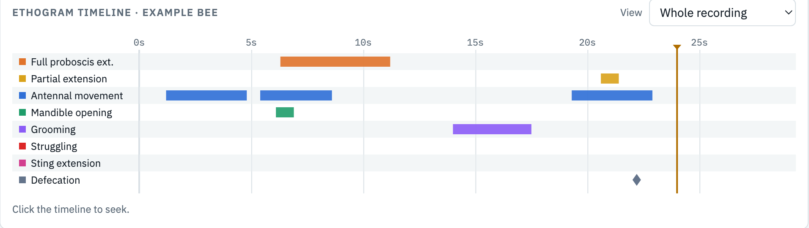
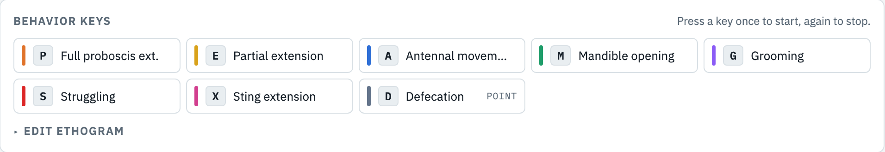
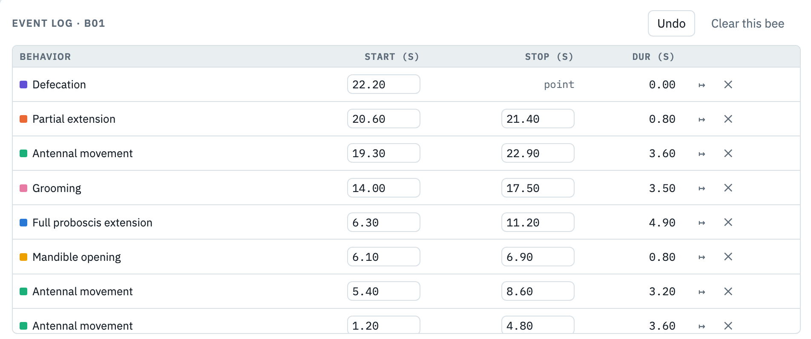
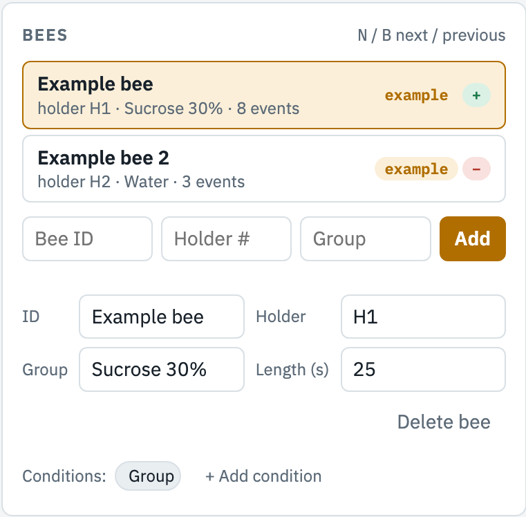
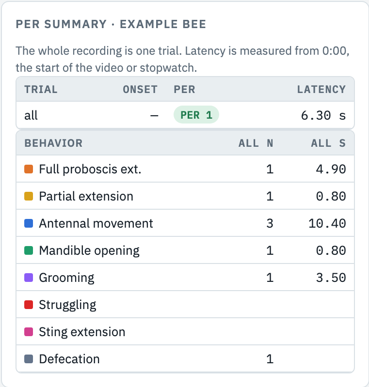
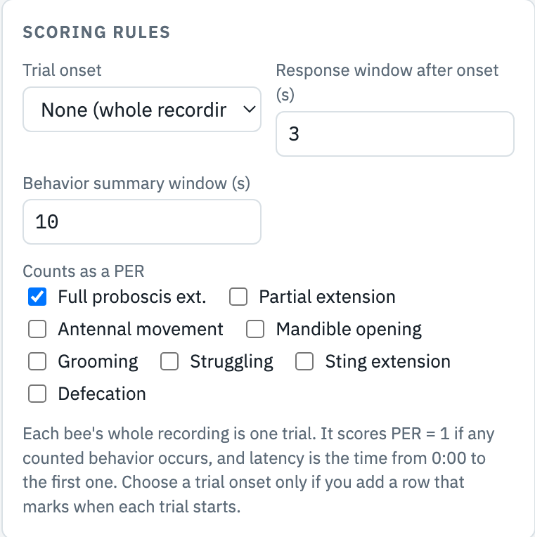
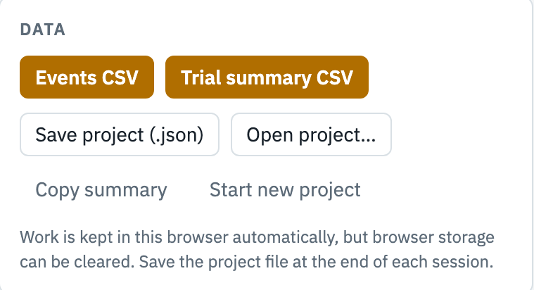
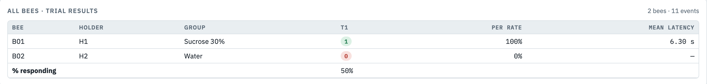
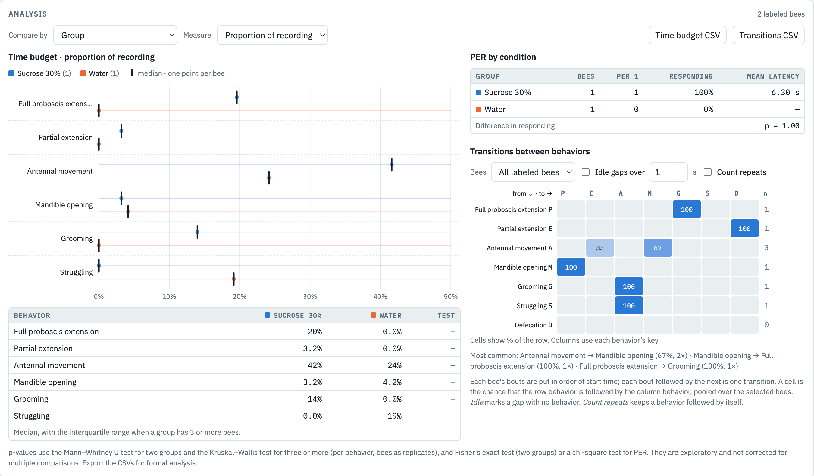

A step-by-step guide to labeling honey bee behavior from video, one harnessed bee at a time, and turning those labels into PER data you can analyze.
kyobisk.github.io/per-scorerWhen a hungry honey bee's antennae touch sugar water, she reflexively extends her proboscis (the tongue-like mouthparts) to drink. This is the proboscis extension response, or PER. Because the response is easy to see in a bee held still in a small holder, it has become one of the standard ways to study learning, memory and sensory perception in insects.
In a PER experiment you present a stimulus to a harnessed bee, such as sucrose on the antennae or an odor she has learned to associate with food, and record whether and how quickly she extends her proboscis. You will score these responses from video, so that every call can be replayed, checked and timed to a single frame.
| Term | Meaning in this tutorial |
|---|---|
| Holder (harness) | The small tube or mount that holds the bee still with her head free. Each holder has a number. |
| Trial | One recording of one bee. PER Scorer treats each bee's whole video as one trial. |
| Latency | Time from 0:00, the start of the video, to the start of the first full extension, in seconds. |
| Bout | One continuous episode of a behavior, with a start time and a stop time. |
| Ethogram | The fixed list of behaviors you score, each with a written definition. |
PER Scorer starts with no behaviors. Before you score, you decide what you will record and write a definition for each behavior: what you must see for it to start, and what ends it. That list is your ethogram. Anyone reading your definitions should be able to score a video and get the same answer you did.
This is one reasonable ethogram, with suggested keys. Use it as a model for your own wording.
| Key | Behavior | Type | Start when… / Stop when… |
|---|---|---|---|
| P | Full proboscis extension | Bout | Start on the first frame the proboscis extends past an imaginary line between the tips of the open mandibles. Stop when it retracts back behind that line. |
| E | Partial extension | Bout | The proboscis moves or unfolds but does not cross the mandible line. Start at first movement, stop when it is folded away again. |
| A | Antennal movement | Bout | Both antennae point toward the stimulus or sweep back and forth rapidly. Stop when they return to a resting position. |
| M | Mandible opening | Bout | The mandibles open with no proboscis extension. Stop when they close. |
| G | Grooming | Bout | The bee wipes her antennae or head with her forelegs (only possible if her legs are free in your holder). Stop when the wiping stops for more than one second. |
| S | Struggling | Bout | Vigorous attempts to escape: strong body, leg or abdomen movements against the holder. Stop when the bee is still again. |
| X | Sting extension | Bout | The sting shaft is visibly pushed out of the abdomen tip. Stop when it is withdrawn. |
| D | Defecation | Point | One key press at the moment a droplet appears. Point events have no duration. |
Behaviors can overlap. A bee can extend her proboscis and move her antennae at the same time; just start both. Each behavior has its own key and its own row on the timeline.
PER Scorer runs in a web browser. Nothing is installed and nothing is sent anywhere; your labels stay on your computer until you export them. The screen has a work area on the left and information panels on the right.






Open PER Scorer at kyobisk.github.io/per-scorer. At the top right, type your initials, check the date, and name the experiment (for example Sucrose responsiveness, day 1). These go into every row of your exported files.
In the Bees panel, type the bee's ID, holder number and treatment group, then click Add. The new bee becomes the selected bee. If the holder number ends in a digit, the form fills in the next one for you (H1, then H2…), so adding a whole rack is quick.
You only do this once per project. In the keys panel, type the name of a behavior from your ethogram, choose a key (PER Scorer suggests one from the name), choose start/stop or point, and click Add behavior. For the behavior that means the bee responded, tick Counts as PER before adding it. Repeat for each behavior. Each one gets a color, a button and a row on the timeline.
Keys must be single letters or digits, and each key can only be used once. Z, N and B are reserved for undo and switching bees. If your instructor gives you an ethogram file, skip the typing: click Edit keys & behaviors and use Import ethogram….
From video (recommended): click Open video file…, drag the file onto the black area, or paste a link to the video into the box next to the button and click Load link. A link has to point straight at a video file (usually ending in .mp4); YouTube links and Google Drive or Dropbox sharing links open a web page instead, so download those videos and open them as files. Set the fps box to the camera's frame rate (ask your instructor; 30 and 60 are common) so the frame-step buttons move exactly one frame.
Live, at the bench: skip the video. Press Space to start the stopwatch at the moment you begin, and score in real time. Live scoring is harder because you cannot rewind, so use it only if your instructor asks you to.
The scorer reads each bee's recording length from the video. You can see and correct it in the Length (s) box under the bee list; it is what proportions of time are calculated from.
Crop if the bee is small in the frame: click Crop… under the video, drag a box around the bee and its holder, and click Apply (or press Enter). That area then fills the video panel. Show full frame undoes it. Each bee keeps its own crop, and a new bee starts with the crop of the bee before it, because holders usually sit in the same place.
Trim if the recording has extra footage before or after the part you score: play to the first moment that counts and click Start here, then to the last moment and click End here. The start becomes 0:00 for that bee, so latency is measured from it, and the recording length is the trimmed length. Labels outside the trim are greyed out and not counted. Click a trim time to jump to it, or Clear trim to remove it. Neither crop nor trim changes the video file.
If several holders appear in the same video, score it once per bee: select a bee, crop to that bee's holder, score the video for that bee, then select the next bee and do the same.
Make sure the video is at 0:00 (click the left end of the timeline) and press Space to play. Press a behavior's key once when it starts and once more when it stops. Watch the head and mouthparts closely, especially in the seconds after the stimulus is presented. If a lot happens at once, watch the clip through once first, then score it on a second pass.
Before moving on, read through the event log. Look for bouts still marked open (you forgot the stop press), and very short bouts from accidental key presses. Click ↦ to jump to any event and check it against the video. Fix times by typing new values.
The PER summary panel now shows PER 1 or PER 0 for the bee, with its latency. If a result looks surprising, go back and look at the video again before you change anything. Press N to select the next bee (or B to go back), and repeat steps 4 to 7.
You never type PER 1 or PER 0 yourself. PER Scorer works it out from your labels with one rule:
The diagram below shows the first 12 seconds of two sample bees, scored with the example ethogram from Part 2.
Bee B02 moved her antennae and briefly opened her mandibles, but her proboscis never crossed the mandible line, so she scores PER 0. Those other behaviors are still recorded, and they show up in the summary and the exported files.

Your instructor sets which behaviors count as a PER (for example, whether partial extensions count too). For experiments with several trials in one video, they can also choose a behavior that marks the start of each trial. Do not change these on your own. If two students use different rules, their results cannot be compared.

PER Scorer saves your work as you go, in the browser you are using. Close the page whenever you like: when you open it again on the same computer, it returns to the same bee, reopens the video and goes to the moment where you stopped. The time of the last save is shown at the top of the page. Browser storage can still be wiped by clearing history or using a private window, and it does not move to another computer, so save a project file at the end of every session and keep it in your lab's shared folder.

| Column | Meaning |
|---|---|
bee_id, holder, group | From the Bees panel. |
trial | all, meaning the whole recording. |
trial_onset_s | Blank unless your instructor sets a trial-onset behavior. |
per | 1 = responded, 0 = did not. |
latency_s | Seconds from 0:00 to the first full extension (blank when per is 0). |
pre_extended | Only used when a trial-onset behavior is set; otherwise 0. |
response_window_s, summary_window_s | Settings used for trial-onset scoring; not used for whole-recording scoring. |
<behavior>_count, <behavior>_dur_s | Bouts started and seconds spent in each behavior. |
The Analysis panel at the bottom of the page compares bees across conditions. It updates as you label, and uses every bee that has at least one label.

Every bee already has a Group. To compare bees by something else, click + Add condition under the bee list (for example Colony or Day) and fill it in for each bee. Choose what to compare with Compare by.
The default measure is proportion of recording: the time a bee spent in a behavior divided by the length of her recording. That keeps bees with longer or shorter videos comparable. You can switch to total seconds, number of bouts, or mean bout length. Point behaviors such as defecation only appear under number of bouts.
Each bee's bouts are put in order of start time, and each bout followed by the next counts as one transition. A cell in the matrix is the chance that the row behavior is followed by the column behavior. For example, 67% in the Antennal movement row under M means two of every three antennal bouts were followed by mandible opening. Tick Idle gaps to count pauses longer than a set time as their own state.
| Problem | What to do |
|---|---|
| The video will not play | The browser cannot read that format. Ask your instructor for an MP4 (H.264) copy, or convert it with a free tool such as HandBrake. |
| PER shows "not set" | No behavior counts as a PER yet. Tick Counts as a PER for your response behavior under Scoring rules. |
| A video link will not load | The link has to point straight at a video file. YouTube links and Drive or Dropbox sharing links open a web page; download the video and use Open video file…. |
| I pressed a key and nothing happened | The cursor is probably in a text box. Click on an empty part of the page, then try again. |
| I forgot to press stop | Find the open bout in the event log and type the correct stop time, or jump to the right moment and click Stop now. |
| I labeled the wrong bee | Press Z repeatedly to undo, or delete the events in the log, then select the right bee and score again. |
| It asks me to open the video again | The video could not be kept in this browser (it may be very large, or you are on a different computer). Open the same file again; your labels are still there and it goes back to where you stopped. |
| A warning says the scorer is open in another tab | Close the extra tab or window. Two copies of the page save over each other. |
| My bees disappeared | The browser storage was cleared. Use Open project… with your last saved .json file. This is why you save at the end of every session. |
| The export button does nothing | Some computers block downloads from the page. Use Copy summary and paste into a spreadsheet, or ask for the per-scorer.html file and open it directly. |
Answer these before you score real data. Assume the default settings: the whole recording is one trial, and only full extensions count as a PER.
Print this page and keep it next to your keyboard.
| Space | Play / pause (or start / stop the stopwatch) |
| ← → | Back / forward 1 s |
| Shift + ← → | Back / forward 5 s |
| , . | One frame back / forward |
| [ ] | Slower / faster |
| Click timeline | Jump to that time |
| Z | Undo last change |
| N / B | Next / previous bee |
| Event log | Type new times, ↦ jump, ✕ delete |
| Edit keys & behaviors | Change a key or color |
Write in your own behaviors. Circle the one that counts as a PER.
Every session: fill in initials, date and experiment first. Save project (.json) before you close the browser.